📚 whoami 🚲
(2010..Time.now) dev: ThoughtWorks -> Braintree -> Breadcrumb (Groupon) -> ThoughtWorks ->
Square -> Sempre Health -> Parachute Health
Healthtech
🪂 Parachute Health 🪂 better ordering for Durable Medical Equipment (we are hiring)
A lead of the Ruby for Good CASA project 2019 - 🚀️
I have been a developer since 2010. For a while I was a consultant, and I've worked in a variety of
industries including airlines and payment processing, and now I work in healthtech.
I work in healthtech because I have figured out what I want to do with the rest of my life, which by the
way is terrifying- I plan to spend my foreseeable future taking my revenge upon the USA healthcare
system
by trying to improve it.
Fast Definitions
⚖️ CASA is a nonprofit which trains volunteers to help foster youth
✨
💎❤️ Ruby for Good️ is a nonprofit which builds software for other nonprofits
(mostly in ruby)
✨
The Ruby for Good CASA project ✨🛠 is software written by Ruby for Good to help
CASA
Some fast definitions- CASA is a nonprofit which trains volunteers to help foster youth
This talk is about
✨
https://github.com/rubyforgood/casa
✨
creating
an ecosystem
for writing OSS
SaaS OSS
serving volunteers
who serve foster youth
This talk is about creating an ecosystem for writing open source software, specifically software as a
service open source software, to serve volunteers- who serve foster youth
raise your hand if
you have ever thought about the USA foster care system
(raise your hand if) you have ever thought about the USA foster care system? - Thank you, you can put
your hands down.
(USA specific) foster system
Details differ per state. There are over four hundred thousand youth in the foster care system on any
given day.
~50 years ago
"Every child placed in foster care must have court oversight to ensure that both the
child’s and the parents’ legal rights are protected until the child reaches a safe, permanent home"
"The first CASA Program was founded in 1977 by Judge David Soukup, a Juvenile Court judge in Seattle,
Washington who felt that he was making critical decisions
about children’s lives without adequate information. He began recruiting volunteers from the community
to work one-on-one with children in foster care. The volunteer advocate, or “CASA,” is appointed by a
juvenile court judge to a child in foster care. The CASA then gets to know their assigned child, gathers
information from everyone in the child’s life (including the child’s biological parents, foster parents,
medical and mental health professionals, social workers, therapists, teachers, and attorneys) and
prepares a written report giving the judge in the child’s court case detailed information about the
situation and the child’s needs."
Fifty years ago in the seventies there was a judge who felt that he didn't know enough about the
situations of foster youth to make informed decisions about their care. Decisions like
who the legal guardian of the youth will be and what the rules around visitation
are. To fix this, he created the organization that grew into CASA.
The CASA organization
Today, CASA is a national organization with many local chapters, corresponding to the organization of
the courts where the volunteers serve. Over ninety thousand volunteers in almost all states, each go
through
over thirty hours of training plus ongoing continuing education. They are sworn in by a judge and commit
to serve for several years. Each volunteer is assigned to one youth- sometimes two when there are
siblings- and follow up on the youth's care by talking to everyone involved.
Some volunteers are law students, some are retired, and they are very good at what they do, but doing
the paperwork is sometimes hard.
The court report is due every six ish months depending on court schedule, and has a specific format.
CASA Funding 💵 📊
"CASA [of Southwest Missouri] relies on a diverse revenue base, foundations and the United Way,
individual and corporate contributions, public grants"
casaswmo.org/who-we-are/frequent-questions
"The DFA awards two types of CASA grants (...) To be eligible to
receive a CASA Grant, an applicant must-"
courts.state.md.us/.../casaspecialconditions.pdf
"In California, most CASA programs are non-profit organizations and receive funding from a variety of
other sources."
courts.ca.gov/documents/CASA.pdf
Different CASA regions are funded in different ways. In general they find and manage their own funding.
Existing processes
CASA volunteer talks to people
biological parents, foster parents, medical and mental health
professionals, social workers, therapists, teachers, attorneys
Take notes
Don't forget any involved parties! 🤔
📝 Court Report .docx / 6 months
💼 Supervisor of volunteers helps!
🚘 Mileage reimbursement
📖 Ongoing training
💰 Grant proposal evidence
How do they do what they do, currently?
A CASA volunteer communicates with the youth, parents, health professionals, teachers, and many others.
They take notes and help with reminders and accountability.
There are several supervisors per CASA organization.
They help the volunteer
craft the court report and keep up with the youth's situation.
Volunteers are unpaid but
can sometimes get mileage reimbursements.
The volunteer attends ongoing training on a regular basis.
The volunteer's notes, if they have been submitted to the CASA organization through the supervisor, are
useful contributing documentation when CASA organizations are providing evidence for their usefulness,
like when applying for grants.
Prior art 🎨
SimplyOptima CasaManager Salesforce.org (nonprofit) Paper forms hand-delivered to CASA regional office
Personal email
SMS text message
Fax
There are other software tools that CASA organizations tend to use. We are not competing with them.
Our work complements and coexists with these solutions. Our uniqueness is we are maximally simple for
the volunteer, free, and we work closely with the CASA organizations to implement changes they want.
Volunteer retention
✨ volunteer - supervisor communication 1️⃣
📞 Volunteer - Supervisor Communication 2️⃣
🚀 VOLUNTEER - SUPERVISOR COMMUNICATION 3️⃣
Volunteer retention is very important.
The biggest predictor of volunteer retention is their relationship with their supervisor.
Our goal is to supplement, enhance, and ease that relationship, NOT replace it or distance it.
💎❤️ Ruby for Good
A nonprofit writing software (primarily in ruby) for many nonprofits
Currently: Human Essentials, Terrastories, Chicago Tool Library, Mutual Aid, Abalone, and
others!
Project list rubyforgood.org/our-work/impact
A friendly place to start doing OSS + learn by doing
2 yearly conferences (east/west USA)
Slack rubyforgood.herokuapp.com
What is ruby for Good? Who are WE? How do WE help?
💎❤️ Ruby for Good -> CASA
A former Prince George CASA volunteer joined Ruby for Good
2019 - conference signup!
Team lead? Sure! ✅ ("Details TBD")
Assigned to CASA 👍
Planning, UI mockups, DB schema...
2020 surprise 😱 remote 😱 conference 🎉
How did Ruby for Good and CASA meet up? A former CASA volunteer joined Ruby for Good and said-
hey, I know some people who could use some software...
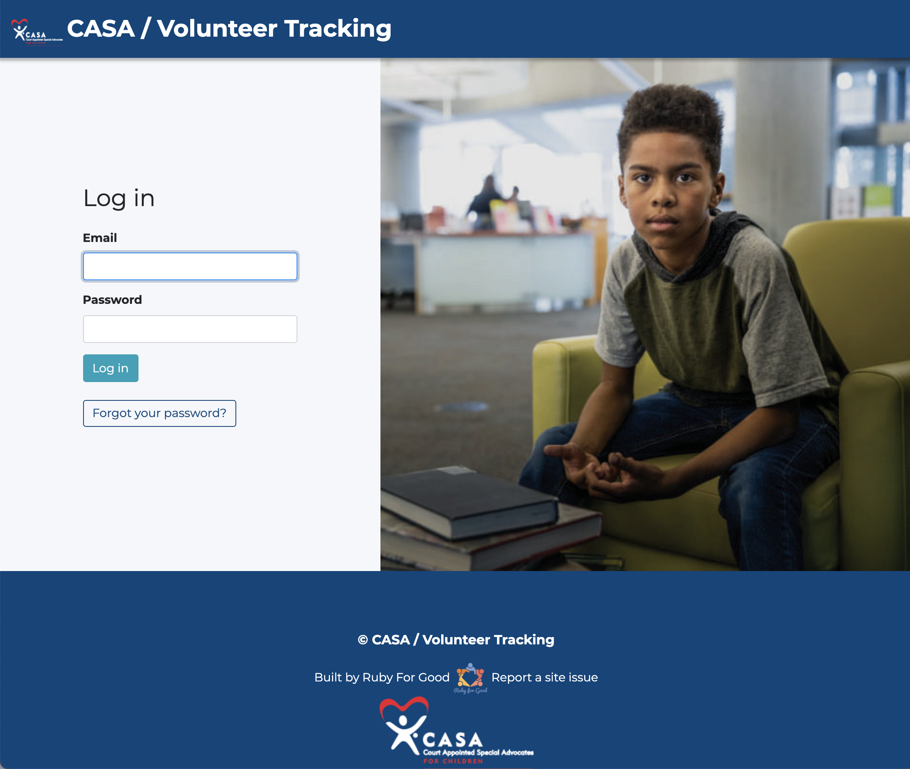
So what did we build? Here is our login page.
The photo from CASA marketing- we chose one with only a youth, as a reminder of what we're here for.
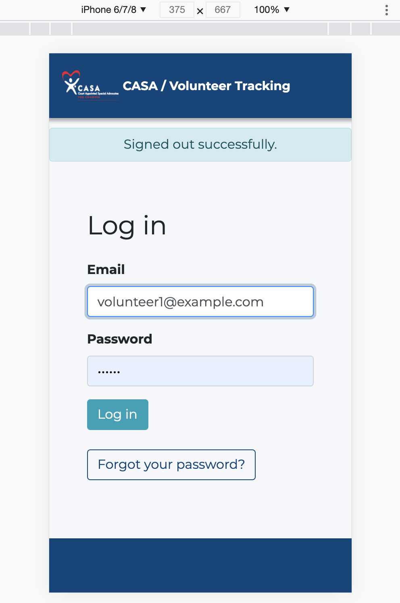
The webapp is fully responsive for mobile, so that volunteers can easily use it from whatever device
they have with them, in whatever place they are. We have an Android app which is a thin shell over our
responsive webview.
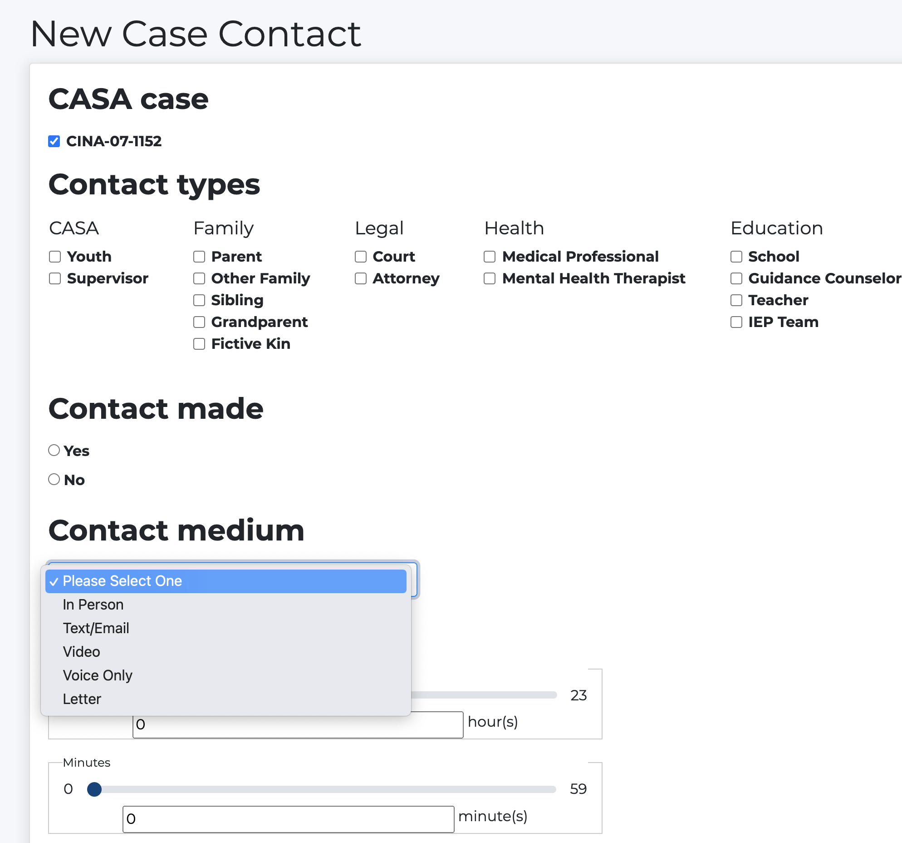
This is the most important page in the app, where a volunteer enters a case contact.
A case contact is when the volunteer talks to someone about the youth's case.
These categories and contact types are fully customizable for each CASA organization and for each case-
for example, a youth might not have a sibling, so a supervisor would de-select Sibling from the contact
type list for this case, so that the volunteer can look at their contact checklist without distractions.
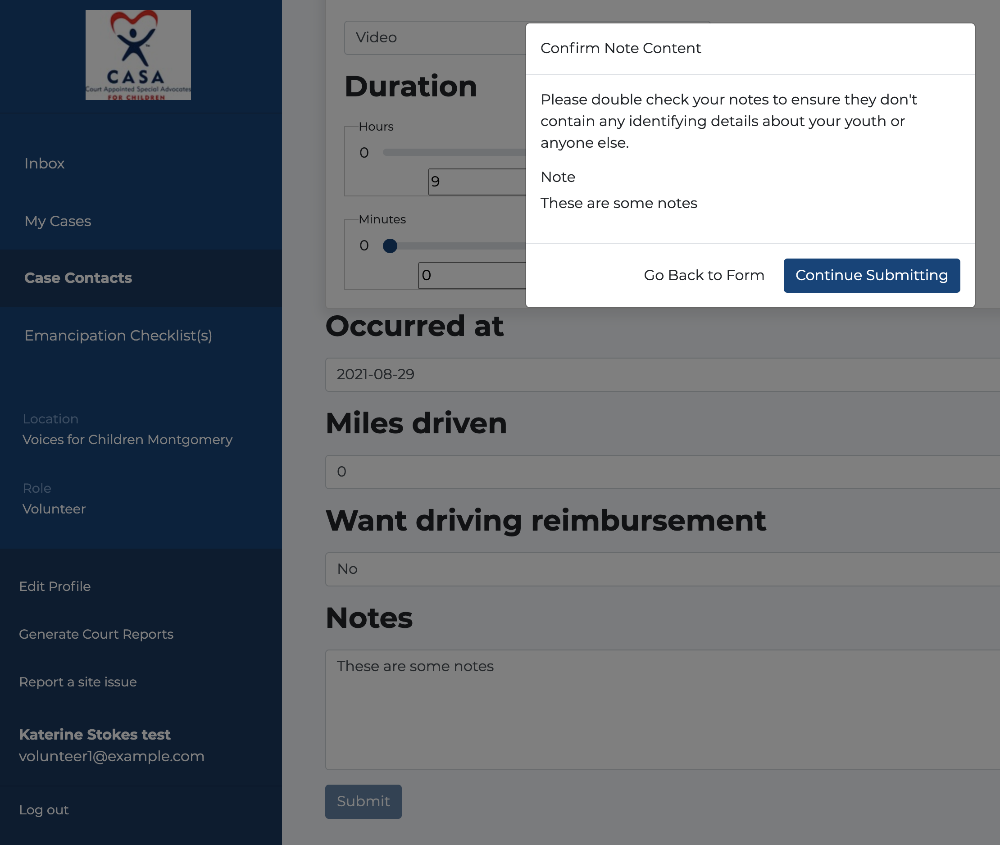
Here is the second half of the most important page, and the most important field on the most important
page, which is notes. Notes in production average 400 - 1000 words. The vast majority of all case
contacts have notes.
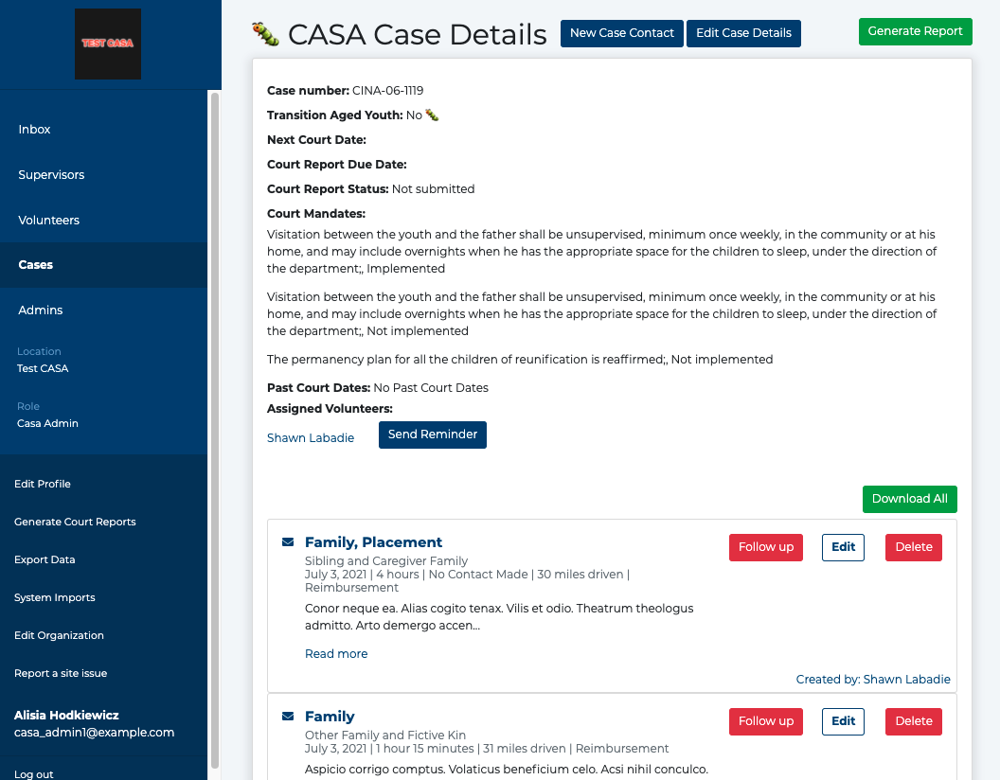
When a case contact has been created, you come back to the case details page.
Every button here was a github issue- there are dozens of pull requests showing on this page.
Some highlights-
The butterfly emoji is a visual representation of a transition aged youth- i.e. teenaged.
The Court Mandates are front and center- those come from the judge.
Up top, there's a button to generate the court report document.
There is also a button linking to the Emancipation Checklist-
emancipation is where you age out of the foster care system, containing things like- does the youth have
a drivers license? Do they have a place to stay?
A supervisor can send an email reminder to a volunteer through the website. or an in-app notification
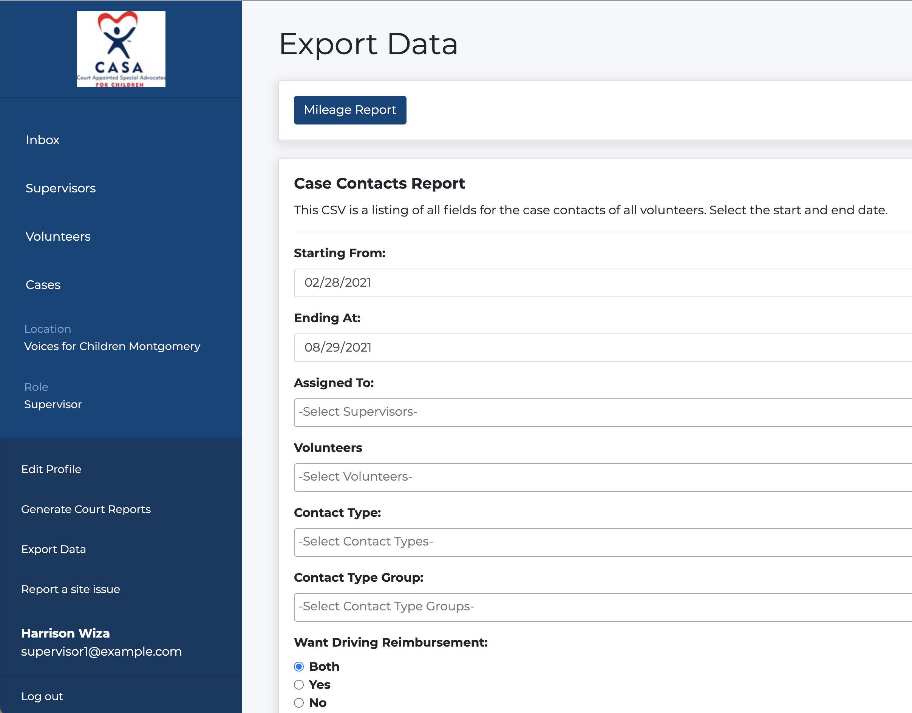
Here is where an admin can export a CSV of mileage reimnbursement requests,
or use our flexible data exporter to get any data out of the system.
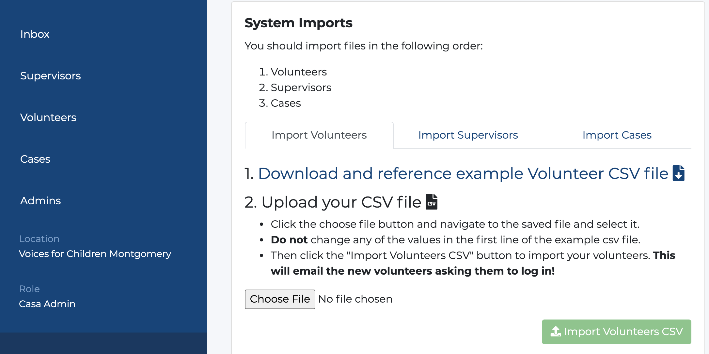
Import is one of the technically trickier parts of the system. It's used for importing all the
supervisors, volunteers, and cases when a new CASA joins the system, and when a new batch of CASA
volunteers complete training, are sworn in, and are assigned to youth cases. They can also be added one
at a time but this is more
efficient for streamlining onboarding.
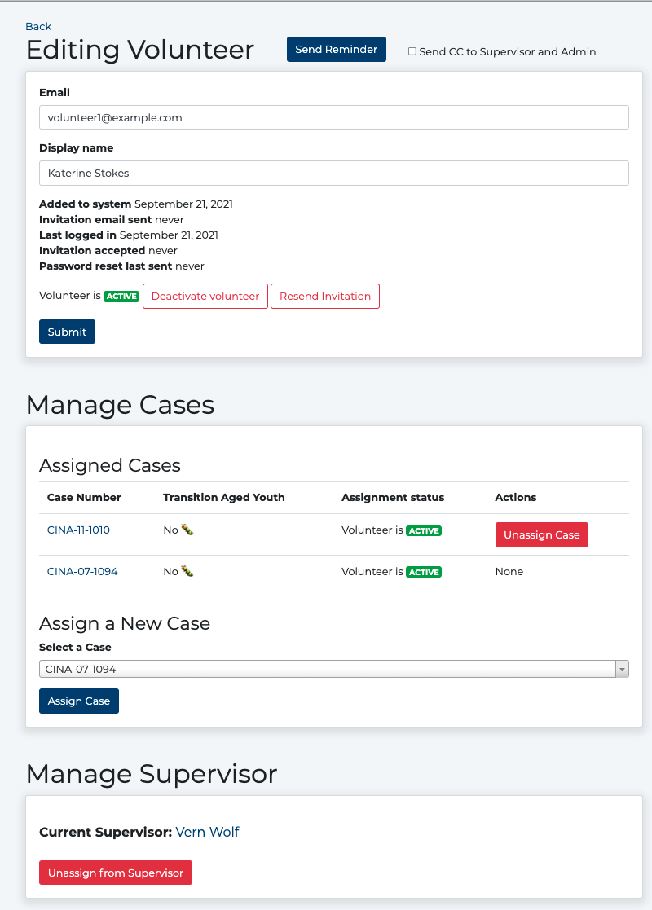
Our UI is much loved by our users as being simple and user friendly and with nothing that they don't
need.
meta
Why do (our) contributors volunteer?
Job credibility 👩🏽💻
Open Source Software 👨🏽💻
Meet the kind of people 🙋🏻 who put time into helping other people 🙋🏻
Why do volunteers- or maintainers- work on these projects? it's been on my mind a lot.
Theory of maintenance
(my) maintaining is 80% making it easy for OTHER people to do work 💪 🛠
Be a safety net ⚡️⚕️
I love coding, I do it for work and for fun. When I want extra fun I do it for CASA, but that's not the
core value I provide. Instead, encourage. Tickets/issues/jiras
OSS as day!job team-building
🏝⛱
Power Week!! powerhrg.com
Various Ruby for Gooders' entire work teams
Non-developer work is a precious commodity in OSS
Contact casa@rubyforgood.org if you/r team are interested
💪💖
Destination for companies who want to give back to their community
SAAS
🔒 You are holding someone’s data; keep it safe! 😰
⛔️🔨🛠 non technical stakeholders
📞 customer support + uptime
What you're not holding, you can't drop
our priorities
Data safety 🔒
Empower CASA volunteers 💖
Improve CASA organizational efficiency 💖
Help contributors grow skills 🌱
Don’t give the foster youth’s data to people who shouldn’t have it
What works?
✅ ✅ ✅ ✅ ✅ ✅ ✅
(for us)
Human impact && stakeholder interactions
Cadence and breaks
Ruby for Good Conferences
🎃😱😭🚀
Calendar
Slack
GitHub
Deployment
Code
Fast PR merge
Community
💻🌱
What works? I have a LIST!
✅ Human impact
Clear & simple causal chain to human impact
Some contributors have a personal connection
Stakeholder contact increases connection
This is custom advice. It may not apply to your situation.
✅ Stakeholder interactions
YouTube playlists
of product walk-throughs ▶️
CASAs talk to each other 🎙
Notes doc 2019-present 📝
Always CC casa@
Smart typeform bug reporter 💡🐞
CC casa@ so that any one contributor is not the only one who knows something
✅ Cadence and breaks
Weekly stakeholder sync
Weekly office hours (same day)
Weekly deploy
Slow/lean times between big events
✅ Ruby for Good Conferences
2x / year (east / west coast USA)
New friends!
Speedrun onboarding
Project level deep direction setting
development sprints, make enormous progress
✅ Calendar
Calendar owned by shared account casa@rubyforgood.org account so we can't lose them when a contributor
leaves.
✅ Slack
Part of Ruby for Good slack
Active public channel
Channel reminders
Leads private channel
Bot channel (PRs, issues, errors, deploys)
Cross-pollination between projects, r4g provides moderation & invite management
✅ Continuous Integration
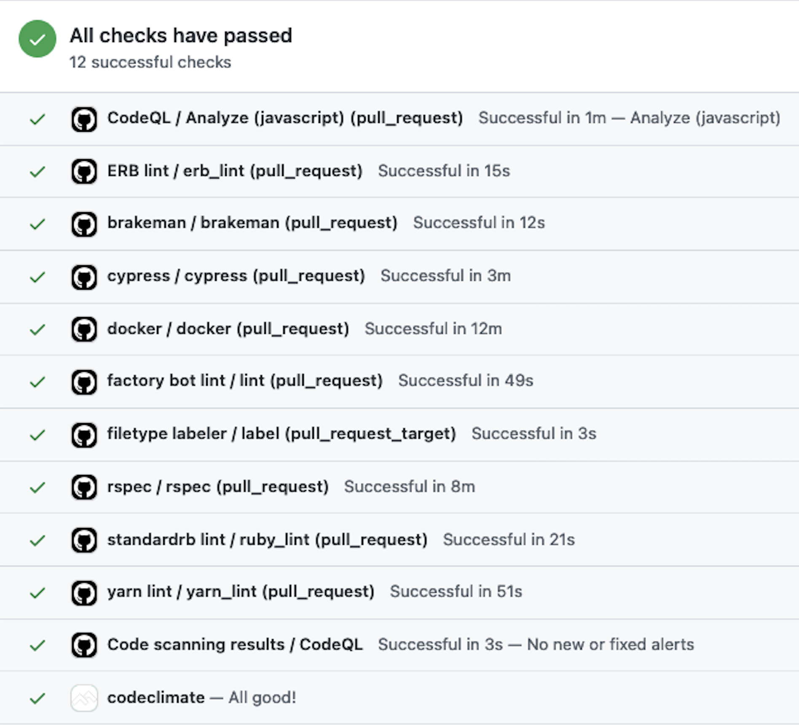
Runs on every PR and on main branch when merged
✅ GitHub
Continuous integration split into named build sections
Dependabot 💖
Project management 📊
Workflows (auto-comment, auto-unassign) via github actions
Wiki
PR templates
Issue templates
PR merging strategy ➡️✅😱 (TBC)
Wiki - project-level information on processes
Issue Templates
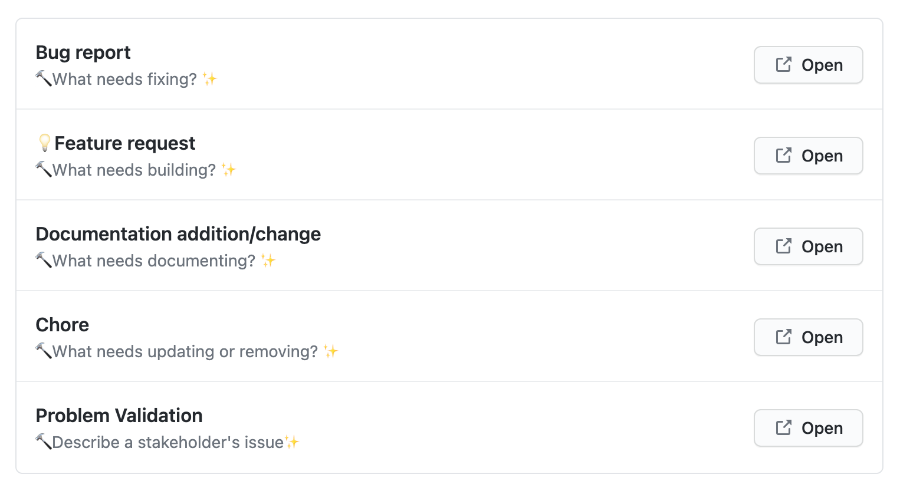
Emoji I have been here! Building a template is an art
This is built of the best pieces of many excellent artifacts.
We want the minimum that will make for better user contributions.
We want to guide new contributors without discouraging them
✅ Deployment
PR merge -> auto-deploys to QA 🛺
Manual deploy to staging
Manual deploy to prod 🚀
Deploy checklist ✉️
Check on DB backups 📀
Check on email health
Heroku teams + pipelines
Heroku scheduler (cron) 🕒
Papertrail (logs) 📄
Bugsnag 🐞
deploy to staging shortly before prod- a chance to see migrations and data migrations run together
realistically rather than piecemeal. Because code that deployed together successfully does not always
deploy successfully together.
✅ Code
Test LOTS
Limit javascript
Readme!
Dependencies: stick to standards, stay basic and picky e.g. devise, pundit, draper,
bootstrap, factorybot, letter_opener, sablon
StandardRB linting
Realistic seed data
Docker or not 🐋
Thin android app for better user experience
Our only defence against ourselves is tests.
A PR without sufficient testing may be merged, but file a chore to add more tests.
✅ Fast PR merge!!!
Retention & growth 🌱 📈 ✨
Lead approves, lead merges 💨
Merging deploys, but not to production
Deployment pipeline as safety net ⚽️ 🥅
Test LOTS 💯
Fast merge, increases contributor stickiness. People stick around because they feel their work is
valued.
Cultural expectation when a PR is merged but with some comments on style and testing is to
open a new PR addressing those comments
✅ Community
Ruby for Good negotiates for compute resources for *all* projects
Cross-project help squad
Second-order backup for AFK maintainers
r4g is my safety net like I am the contributor's safety net
Keep doing
✅ 💖
Be people at each other
Chill sometimes ☃️
Group events! 🎳
Use powerful tools 🛠
Deploy often and carefully 💪
Wary code choices 🔮
Accept PRs joyfully 🙏
Community
✨ 💎 ❤️
This is custom advice. It may not apply to your situation.
What doesn't work?
❌ 😰 😭 😱 ❌
(for us)
Need more issues
System edges
Historical records
Testing is hard
Feedback
❓
This is custom advice. It may not apply to your situation.
❌ More issues, please!
Small bites 🍪
2-10 / week
ALL / 3 days (during conferences)
Buffet style
Buffet style i.e. they get consumed as soon as we make them.
This is a great problem to have, but it is still a problem that we have.
❌ System edges
Import
override? 🔨
de-duplicate? 🤦🏻
partial error? 🛑 ➡️ 🛑 ↩️
rollback? ⏮
Export data filters 🌪️
Generate user-customizable templated .docx 📄 (Sablon)
Import is easy to do, hard to get right, few contributors have Word, hardest to get done AND most
important to our
users
❌ Memory
Search Slack history
Search old github issues
Meeting notes doc 2019-present
Wiki
Architectural Decision Records
Verbal history
It's never enough
All projects have this issue and we do too
❌ What is a good test?
Good testing is a skill not as easy to specify in acceptance criteria as visible functionality
How do you teach good testing?
❌ Missing-contributor feedback
The people who leave don't say why. Measure what *happens*. Hear the concerns of the people who
stay
Some people show up one time and leave and we never hear from them again. We will never know what
happened.
Working on
📈 💪 😅 🛠
Backlog
Data Import
Data Export w/ .docx
Future Archaeology
Testing
Getting feedback
❓
We have lots of fun and interesting work to do. If this work sounds like good work to you, come and
bring your friends and coworkers
💡 Encouraged contributors 💡
💡 Become strong contributors 💡
Many of our contributors come in because a friend tells them that we are the kind of project that will
let them work!
Summary
Multi-level safety nets 🥅⚽️
Project goals: serve stakeholders 📈 and grow contributors 🌱
Weekly cadence 📅
Ebbs and flows of intensity -> sustainable maintainership
Safety allows people to move faster. Backing org helps with negotiating on your behalf
for free services, + hard-won knowledge
Tips 💡
When you want users to upload a spreadsheet, provide a downloadable sample spreadsheet
Use github workflows to automate polite stale issue un-assignment to replace maintainer emotional
labor
PRs that each deployed cleanly may not deploy cleanly together
📝 A note on purpose
What is your project's purpose?
Improve the world! ✨
What are your contributors' purposes?
OSS skills, job credibility, learn 👩🏽💻
What are your users' purposes?
Serving CASA youth 💪
What is your purpose as a maintainer?
Smooth the path 🛣
Conspicuously invest in making sure that people Know What You Want.
Send halp
More CASA regions - we're at ~3/900+
PM, QA, design!!! 📊 🛠 🎨
Open github issues! 💯
PRs, especially testing & refactoring 🍦
🚲 @goldlindastein
✨
@rubyforgood 💎
linda@rubyforgood.org ✨ casa@rubyforgood.org
If you know someone who is involved in the foster care system we would love an introduction
# seed realistic case numbers
@case_number_sequence = 1000
CASE_TYPES = ["CINA", "TPR", ""]
def generate_case_number # format different per region! PG CASA
# CINA-YY-XXXX Child In Need of Assistance
# TPR-YY-XXXX Termination of Parental Rights
years = ((DateTime.now.year - 20)..DateTime.now.year).to_a
yy = years.sample(random: rng).to_s[2..3]
@case_number_sequence += 1
"#{CASE_TYPES.sample(random: rng)}-#{yy}-#{@case_number_sequence}"
end
Case numbers are meaningful. When we show data to our Subject Matter Experts, SMEs, it's important that
the data be realistic because many SMEs are hyper-sensitive to invalid or unrealistic data. For example,
occasionally one of our users points out that in our test data, a case with a number starting in 00
should have emancipated by now, and a case with a YY field of 20 cannot reasonably be a transition aged
youth because they are 1 year old, not a teenager.
### What github issue is this PR for, if any?
Resolves #2XXX
### What changed, and why?
### How will this affect user permissions?
- Volunteer permissions:
- Supervisor permissions:
- Admin permissions:
### How is this tested? (please write tests!) 💖💪
### Screenshots please :)
### Feelings gif (optional)
What gif best describes your feeling working on this issue? https://giphy.com/
How to embed:
``
A balance between too much and too little - too much work
gem "after_party" # post-deployment tasks
gem "amazing_print" # easier console reading
gem "azure-storage-blob", require: false
gem "bootsnap", ">= 1.4.2", require: false # Reduces boot times through caching; required in config/boot.rb
gem "bugsnag" # tracking errors in prod
gem "devise" # for authentication
gem "devise_invitable"
gem "draper" # adds decorators for cleaner presentation logic
gem "faker" # creates realistic seed data, valuable for staging and demos
gem "filterrific" # filtering and sorting of models
gem "image_processing", "~> 1.12" # Set of higher-level helper methods for image processing.
gem "jbuilder", "~> 2.11" # Build JSON APIs with ease. Read more: https://github.com/rails/jbuilder
gem "lograge" # log less so heroku papertrail quits rate limiting our logs
gem "noticed" # Notifications
We use after_party to TODO
We use amazing_print to
We use azure to
We use bootsnap to
We use bugsnag to
We use devise to
We use devise_invitable to
We use draper to
We use faker to
We use filterrific to
We use image_processing to
We use jbuilder to
We use lograge to
We use noticed to
gem "paper_trail" # tracking changes
gem "paranoia", "~> 2.2" # For soft-deleting purpose
gem "pg", ">= 0.18", "< 2.0" # Use postgresql as the database for Active Record
gem "puma", "~> 5.4" # Use Puma as the app server
gem "pundit" # for authorization management - based on user.role field
gem "rack-attack" # for blocking & throttling abusive requests
gem "request_store"
gem "sablon" # Word document templating tool for Case Court Reports
gem "skylight" # automated performance testing https://www.skylight.io/
gem "webpacker", "~> 5.4" # Transpile app-like JavaScript. Read more: https://github.com/rails/webpacker
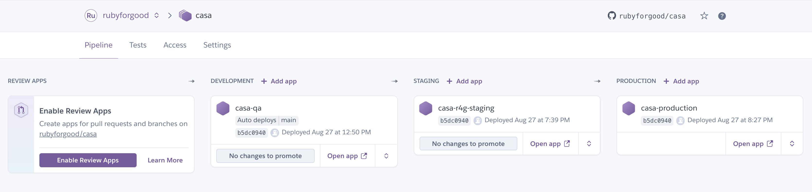
Our pipeline and safety net- looks a lot like Jenkins if you squint.
TODO add MORE tech content, codez